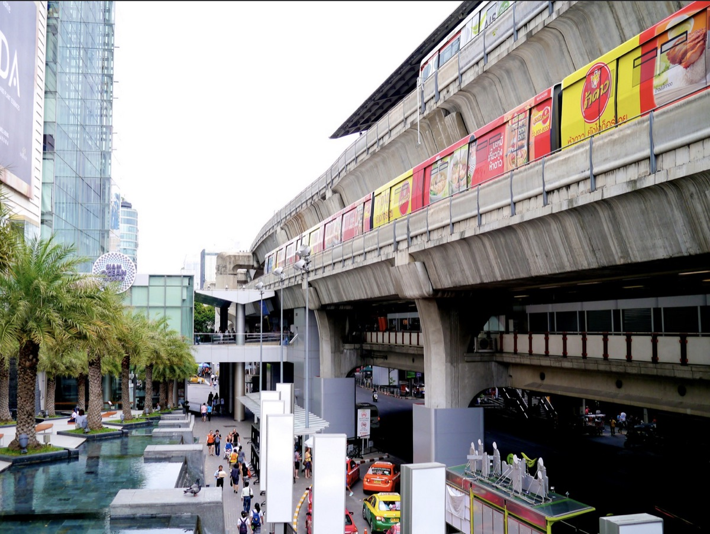

Firefox Research in Southeast Asia

Every good UX researcher has the ability to become totally engrossed in even the smallest research project. Yet, one of the amazing things about working for a global, mission-driven organization like Mozilla is the opportunity to take on some truly big research challenges. The Mozilla UX Research team is about to embark on such a project as we begin our Firefox Southeast Asia research in Thailand and Indonesia.
Research Goals
The primary goal of this research project is to understand how people in specific emerging markets experience the Internet and learn about emerging trends that will provide insight into new and current product features. We are particularly interested in learning about the context of Internet use, values related to the Internet, and specific Internet usage.
So, why not just send out a few surveys? Mozilla believes that there are valuable insights that can only be generated by in-context, ethnographic research. We recognize that many of the people involved in creating new technologies live in a fairly limited tech bubble and we truly value learning from a global community of Internet users.
Why Thailand & Indonesia?
One of the more challenging decisions researchers have to make at the beginning of a project is how to appropriately limit the scope of the research question. For this project, we have decided to focus on Thailand, Indonesia, and India. (India is slated for early 2014.) Both Thailand and Indonesia have rapidly growing economies and relatively low internet penetration rates. Interestingly, the Firefox market share in these two countries is dramatically different. Firefox holds 64% of the browser market in Indonesia, yet only accounts for 23% of the market in Thailand. We believe these two countries will provide valuable insight into understanding user needs and improving the Firefox market share.
Project Planning
A small team of user experience, engineering, and marketing Mozillians will be traveling to Thailand and Indonesia to conduct user interviews and ethnographic research in August and September. We have partnered with SonicRim, an awesome global design research firm, on this research project. Our research is divided into three phases: Planning & Recruiting, Fieldwork, and Analysis.
Phase 1: Planning & Recruiting
Recruitment: Mozilla and SonicRim created a recruitment survey (aka a "screener") to identify the participants for our interviews. We will be interviewing people who are moderate to avid Internet users, who use a range of different hardware and software, and who come from a variety of socio-economic backgrounds. We then selected two cities in each country to focus our efforts: Bangkok and Chiang Mai in Thailand and Jakarta and Bandung in Indonesia. Our local recruiters will identify 6 participants from each city to participate in formal interviews.
Research Activities: Before we arrive, each participant will complete a "homework" assignment that will document their experiences of life and culture through photos and written descriptions. After we arrive, we will conduct 2-hour interviews in each participant's home or place of work. Each participant will select a friend or relative to join them during the in-person interview. Interviewing "buddy" pairs instead of individuals can facilitate a deeper discussion and often results in more detailed data. In addition to these formal interviews, our fieldwork teams will visit locations that may provide interesting insights related to culture and technology like electronics stores and shopping areas.
Community Events: Mozilla is a global organization with community members all over the world. We are looking forward to hanging out with some of Mozilla's awesome contributors at the community events we are planning in Thailand and Indonesia.